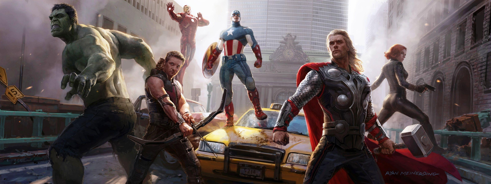
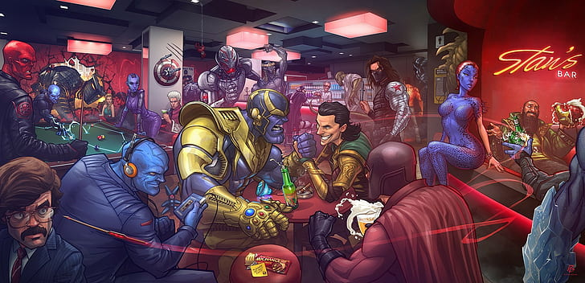

Marvel Sinematik Evreni (MCU), tamamı aynı evrende
geçen ve olay örgüsü bakımından birbirleriyle bağlantılı olan 20’den
fazla filme ev sahipliği yapıyor. Küresel gişede
22,5 milyar doların üzerinde hasılat yapan MCU, tüm
zamanların en çok kazanan film serisi unvanına sahip. Hatta 2021
yılında en yüksek hasılatı elde eden 25 filmden 8 tanesi de Marvel
Studios’a ait. Bu kapsamda seriye yeni başlayacak olan kişiler ilk
olarak
Marvel filmleri hangi sırayla izlenmeli? sorusunun
cevabını arıyor.
Marvel, filmlerini dört farklı grup halinde yayımlıyor. İlk grup;
Paramount Pictures’in dağıtımını üstlendiği
Iron Man (2008) ile başlarken, Disney’in
The Avengers (2012) ile işin içine girmesini takiben
son buluyor. Iron Man 3 ile başlangıç yapan ikinci grup ise
Ant-Man (2015) ile noktalanıyor. Şu anda dördüncü
grubu genişletmek için çalışan Marvel, evreye yeni filmler katmaya
devam ediyor. Bu kadar karışıklığı gördükten sonra, gözünüz korkmuş
olabilir. Ancak endişe etmenize gerek yok.
Kronolojik Sıralama
Marvel filmlerinin kronolojik olarak mı yoksa çıkış tarihine göre mi
izlenmesi gerektiği konusunda herkes hemfikir değil. Biz yine de iki
türe göre de listelemek istedik. Zevkinize göre istediğiniz sıradan
başlayabilirsiniz. Eğer ‘devamlılığa’ önem verenlerdenseniz, Marvel
filmlerini kronolojik sıra ile izlemek size iyi
gelecektir. Böylelikle olay örgüsünü daha iyi anlayacak, arada bir
kopukluk hissiyatı yaşamayacaksınız.

İşte kronolojik olarak Marvel izleme sırası:
İlk Yenilmez: Kaptan Amerika (Captain America: The First Avenger)
Kaptan Marvel (Captain Marvel)
Iron Man
Iron Man 2
The Incredible Hulk
Thor
Yenilmezler (The Avengers)
Iron Man 3
Thor: Karanlık Dünya (Thor: Dark World)
Kaptan Amerika: Kış Askeri (Captain America: The Winter Soldier)
Galaksinin Koruyucuları (Guardians of the Galaxy)
Galaksinin Koruyucuları 2 (Guardians of the Galaxy Vol. 2)
Yenilmezler: Ultron Çağı (Avengers: Age of Ultron)
Ant-Man
Kaptan Amerika: Kahramanların Savaşı (Captain America: Civil War)
Black Widow
Örümcek-Adam: Eve Dönüş (Spider-Man: Homecoming)
Doctor Strange
Black Panther
Thor: Ragnarok
Avengers: Sonsuzluk Savaşı (Avengers: Infinity War)
Ant-Man ve Wasp (Ant-Man and the Wasp)
Avengers: Endgame
Örümcek-Adam: Evden Uzakta (Spider-Man: Far from Home)
Shang-Chi ve On Halka Efsanesi (Shang-Chi and the Legend of the
Ten Rings)
Eternals
Spider-Man: No Way Home
Morbius
Doctor Strange in the Multiverse of Madness
Thor: Love and Thunder
Marvel kadar, Avengers izleme sırası da çok büyük
önem taşıyor. Zira Avengers; Iron Man’dan Thanos’a varana kadar
önemli karakterlerin çoğuna ev sahipliği yapıyor.
Çıkış Tarihine Göre Sıralama
İlla da kronolojik sırayla izleme takıntınız yoksa ve “önce çıkan daha
önemlidir” diyorsanız, Marvel Sinematik Evreni’ni çıkış tarihine göre
izlemelisiniz. Bahsettiğimiz gibi Marvel filmlerini dört gruba
ayırıyor. Sırayla tüm filmleri gösterime girdikleri tarihe göre izleme
listesini aşağıda bulabilirsiniz. Ancak ağırlıklı olarak kronolojik
sırayla izlemenin tavsiye edildiğini de hatırlatmakta fayda var. Çünkü
ufak da olsa kopukluk yaşamanız mümkün.

İşte çıkış tarihine göre Marvel ve Avengers filmleri izleme sırası:
Phase 1:
Iron Man (2008)
The Incredible Hulk (2008)
Iron Man 2 (2010)
Thor (2011)
İlk Yenilmez: Kaptan Amerika (Captain America: The First Avenger)
(2011)
Yenilmezler (The Avengers) 2012
Phase 2:
Iron Man 3 (2013)
Thor: Karanlık Dünya (Thor: The Dark World) (2013)
Captain America: The Winter Soldier (2014)
Galaksinin Koruyucuları (Guardians of the Galaxy) (2014)
Yenilmezler: Ultron Çağı (Avengers: Age of Ultron) (2015)
Ant-Man (2015)
Phase 3:
Kaptan Amerika: Kahramanların Savaşı (Captain America: Civil War)
(2016)
Doctor Strange (2016)
Galaksinin Koruyucuları 2 (Guardians of the Galaxy Vol. 2)
(2017)
Örümcek-Adam: Eve Dönüş (Spider-Man: Homecoming) (2017)
Thor: Ragnarok (2017)
Black Panther (2018)
Avengers: Infinity War (2018)
Ant-Man ve Wasp (2018)
Kaptan Marvel (Captain Marvel) (2019)
Avengers: Endgame (2019)
Örümcek-Adam: Evden Uzakta (Spider-Man: Far from Home)
(2019)
Phase 4:
Black Widow (2021)
Shang-Chi ve On Halka Efsanesi (2021)
Eternals (2021)
Spider-Man: No Way Home (2021)
Phase 5:
Morbius (2022)
Doctor Strange in the Multiverse of Madness (2022)
Thor: Love and Thunder (2022)
Bu süreçte elbette ki dizileri çıktı ve bu aralara bir yerlere
yerleştirildi. Dizilerin izleme sırası için
buraya tıklayabilirisiniz.
Marvel izleme sırası listemizin böylelikle sonuna geldik. 2021 yılı
Marvel Sinematik Evreni adına dolu dolu geçti. 5 Kasım’da vizyona giren
Eternals, 4. aşamanın bir sonraki filmi oldu. Onu 17 Aralık’ta
yayınlanan Spider-Man: No Way Home takip etti.